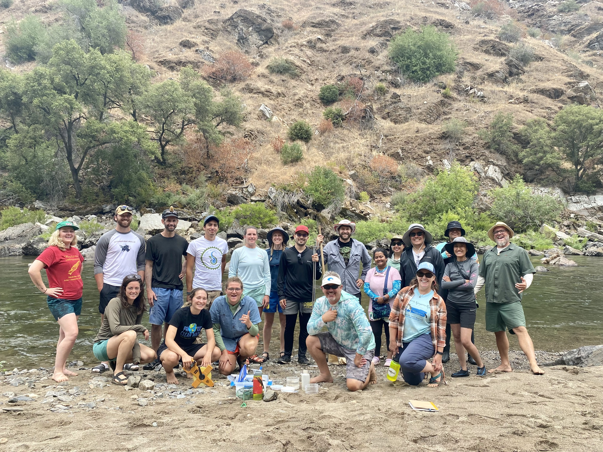
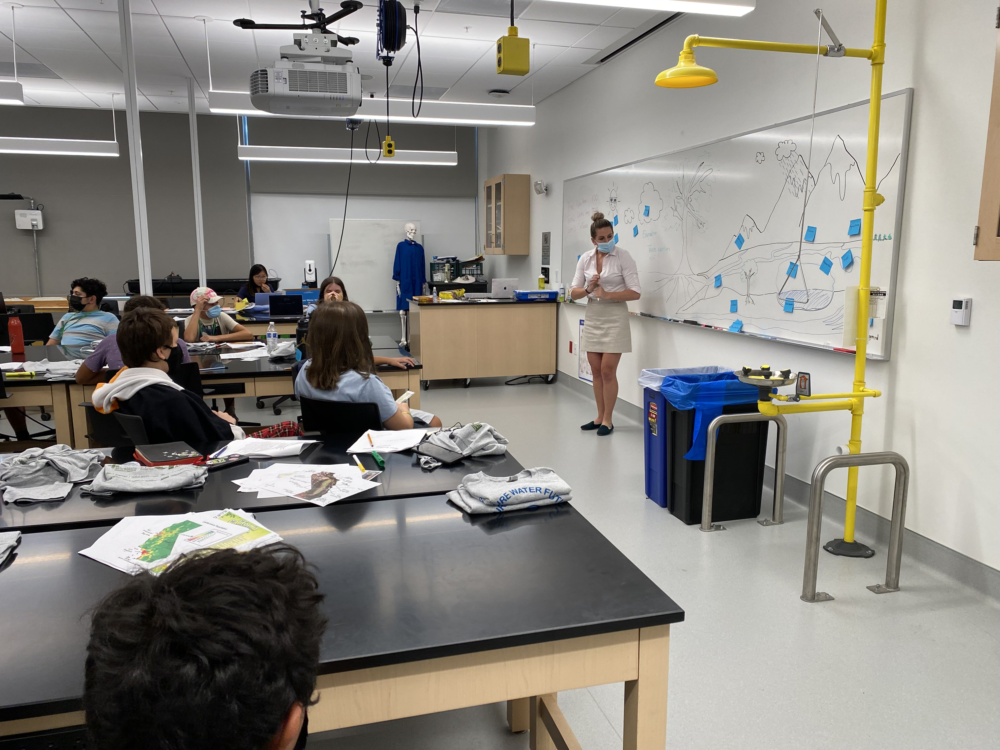

Secure Water Future is a collaborative of investigators from across the semi-arid western US aiming to improve agricultural and environmental water resilience.
Currently funded by the US Department of Agriculture, the team combines the expertise of researchers, extension specialists, and educators working across California, New Mexico, and Utah with applicability to the western US and beyond.


Climate Adaptation Science Academy is a summer experiential learning opportunity where graduate students will receive training from academic experts and water leadership organizations such as ern Groundwater Banking Authority, Rosedale Rio Bravo Irrigation District and groundwater sustainability agencies, USDA Climate Hubs, Department of Water Resources, and leaders of AB 1755 California Open Water Data programs.
Super Soaker Water Academy is a week-long program that teaches students all about water and how it is stored and used in California. By the end of the week, students have participated in water activities to teach them the relationship between water, agriculture, climate change, and how we can use technology to help our water systems. The program includes a kayaking field trip to Lake Yosemite.
